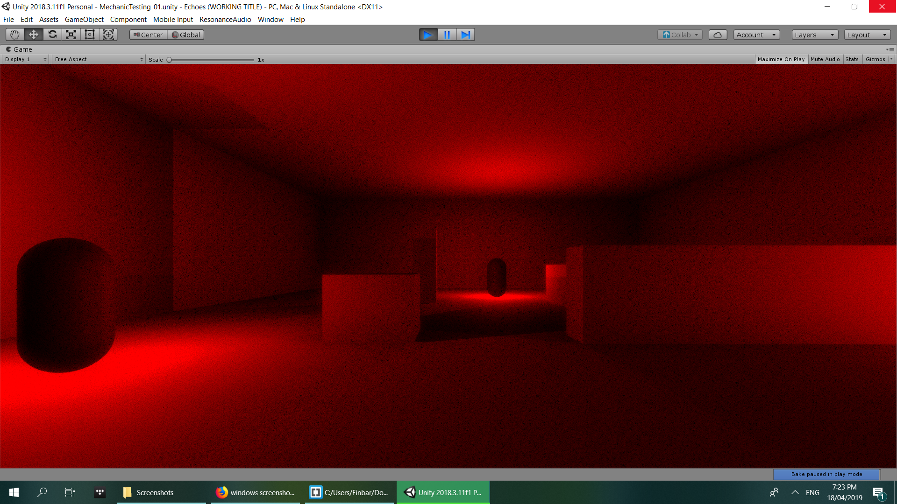

Echoes is a first person stealth horror game based around the concept of echolocation. Both you and the creatures you must avoid can only perceive their surroundings via sound - it is too dark to see with your eyes. In Echoes, sound is visualised as light. Enemies will try to detect you by emitting sounds, similarly to bats. Stay still or hide in the shadows of their echoes to avoid being discovered.
May 12, 2019
Echoes CANCELLED???
With Phil being occupied by other commitments, and the submission deadline drawing closer, it is looking unlikely that Echoes will be ready for me to start doing sound design on in time. I'm keeping this page on the website since I think it is a super cool concept, which I might one day want to return to. With Echoes most likely cancelled for the time being, I'm going to start looking for another project to fill its place.
RIP Echoes
April 18, 2019
Audio System Testing
I see audio immersion as playing a highly important role in this game. The player should be able to close their eyes and hear exactly which direction a sound is coming from. Unity's standard audio engine unfortunately doesn't facilitate this kind of high-fidelity three-dimensional audio rendering. By default, sounds in Unity (and by extension most traditional game engines) are spatialised via pretty archaic means:
Sound is panned between left and right to indicate the direction towards the sound source
Sound is reduced in volume to indicate the listener's distance from the sound source
In the real world, the way we experience sound is far more complex. The shape of our ears allows us to perceive with high accuracy the point in space where a sound has originated from. We can tell whether a sound came from directly behind us or directly in front of us for example, while in Unity these would sound identical since they are both simply banned to the center.
Fortunately there are plugins for Unity, such as Resonance Audio from Google, which simulate sound in a far more natural and immersive way. As well as accurately spatialising a sound, Resonance Audio can use in-game geometry to realistically simulate the reverb for different virtual spaces. I've begun experimenting with Resonance Audio by having the enemies produce a simple tone when they echolocate.
Below is the test tone clip I've been using, as well as a recording of the in-game audio as I walk around the room.
Dry Test Tone Clip
In-Game Audio
April 15, 2019
Prototyping

We've begun work on Echoes by creating a simple echolocation system. The enemy placeholders will echolocate by instantiating a "sound wave" object. This is essentially just a Unity point light which expands in range before fading out, representing sound dispersing outwards from the source. The light will also cast shadows from geometry in the scene, representing acoustic absorption. These shadows will play an important gameplay function, as they are where the player can hide to avoid being detected by enemies.
Obviously this is not a super-accurate depiction of real physical acoustic behaviours. In real-life, sound waves reflect off surfaces, diffract around corners, and are not completely absorbed by solid objects. This simplification however works a lot better both from a gameplay perspective, and from the perspective of neither me or Phil having any idea how to accurately program and render real sound wave behaviours.
April 5, 2019
Early Conceptualisation
I got in contact with my buddy Phil to see if he was working on anything that I might be able to do sound design for. Although he had nothing in the works, he was more than keen to start a collaborative project. Since this game is going to be built from the ground up for this project, Phil and I decided that we wanted to create a game where the sound design plays an important role. Phil being a fan of horror games such as Resident Evil, we started brainstorming with the basis of "horror game in which sound is a gameplay element". The idea that we eventually reached was a game based around the concept of echolocation. Similar to many horror games, the player will have to make their way through levels while avoiding being discovered by terrifying monsters. The twist is that the player is a pitch black environment in which neither they nor the creatures they must avoid can see anything. Instead, both entities must rely on their perception of sound in order to read their surroundings. In this game, sound is visualised as light. The creatures will periodically emit high frequency sounds, illuminating their surroundings. While this will temporarily allow the player to see the environment, the player must avoid standing directly in the path of the sound wave, or else they will be detected and subsequently hunted down by the monsters.
Ironically, Phil is actually deaf in one ear. This means he has no perception of three-dimensional sound and cannot, in games or in reality, differentiate between a sound coming from his left or from his right. Since audio cues will probably play an equally important role in Echoes as visual cues, this game could present a good opportunity to explore accessibility modes for the hearing-impaired in video games. Time permitting, we want to try and impliment a setting which will enable additional visual cues to inform the player where a sound is coming from.